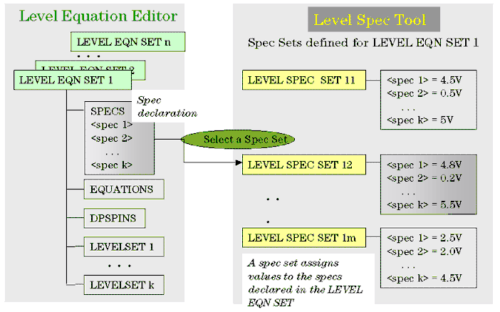

Structure of an equation based level setup
When setting up a level equation set, the following components are required:
- Equation set header
- A list of the specs
These specs are used within the level equation set. These must correspond with level specs defined in the Level Specification Component.
- Equation definitions
These are derived specs and can be defined as expressions which can reference the specs mentioned above. They are local to an equation set.
- An optional DPS set
This DPS set defines the levels of all DPS pins and can be used by all level sets within the equation set.
- A number of level sets
Each level set must define the input and/or output levels of all I/O pins.
plus
- Spec Sets (defined in Spec Tool)
The figure below illustrates the structure of an equation based level setup.

Note Level sets are created when a specset defined in the Level Specification
Component references an equation set defined in the Level Equation Component. The number of level
sets created is determined by the number of level sets defined within the referenced equation
set. Thus, if a specset defines 5 level sets, 5 level sets will be defined in the hardware. The
maximum number of level sets that can be defined within one equation set is 99. However, there is
a system limit to the number of level sets that can be created. This is defined by the
DSCP command which replaces the CNTR command of
earlier releases. Exceeding this limit will result in an error.